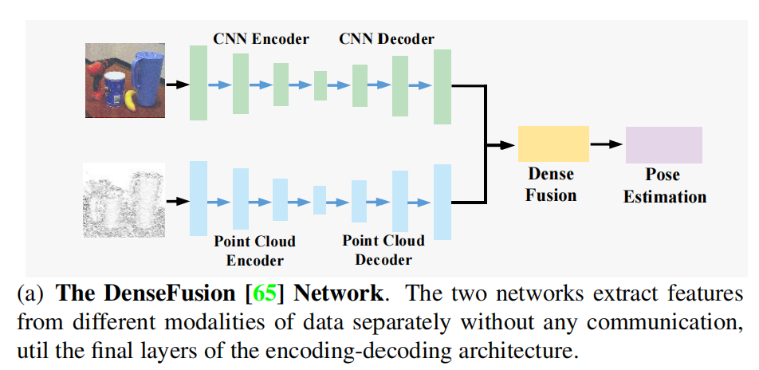
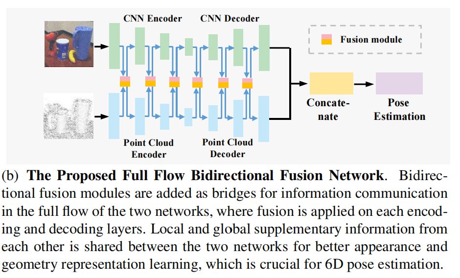
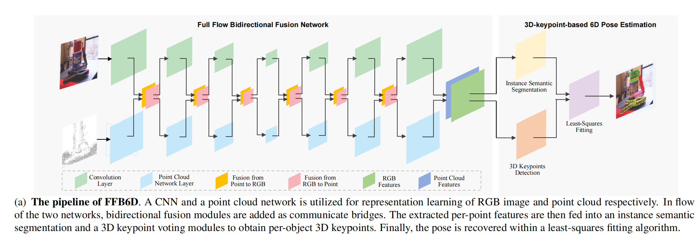
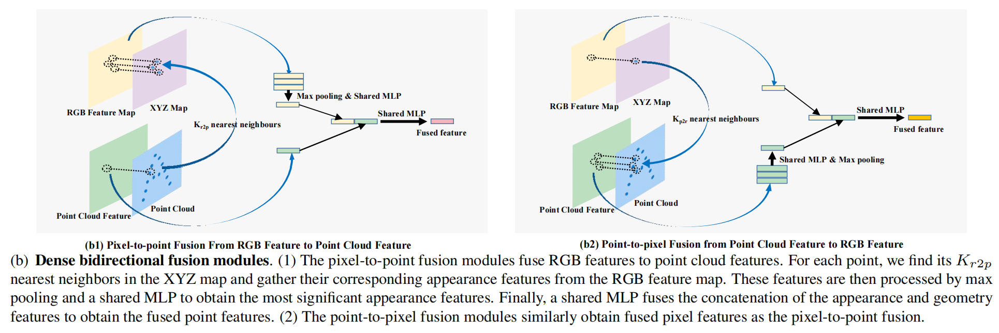
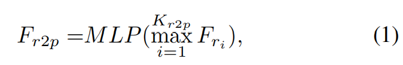
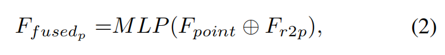
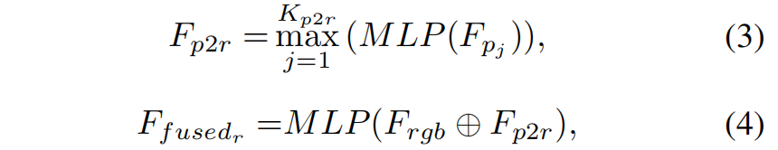
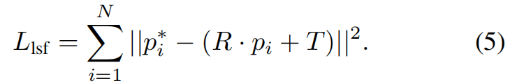

FFB6D
FFB6D: A Full Flow Bidirectional Fusion Network for 6D Pose Estimation
来源： CVPR2021
代码：https://github.com/ethnhe/FFB6D
提出的问题
RGB图像+CNN：透视投影会导致几何信息损失
RDB-D+CNN：：如何有效地充分利用这两种数据模式（RGB图+深度图）来进行更好的6维姿态估计？
已有的方法
使用级联思想，先从RGB中做粗略估计，再使用ICP或多视图的假设检验做后续优化。这种方法并不是端到端的方式，而且非常耗时。
使用两个网络，一个CNN，一个PCN( point
cloud network)，分别从RGB图和点云文件中提取特征（croped RGB image and point cloud），然后把这两种特征concat在一起(称之为dense features)，用于姿态估计。这种混合特征的方法(concat)太naive。也是用两个网络，CNN和PCN，只不过将特征混合方式由
concat改为dense fusion，如下图： 但是，由于CNN和PCN是相互独立工作的，它们之间并没有信息传递，因此也会存在特征提取性能退化问题。
本文的方法
- 提出full flow bidirectional fusion network解决6D姿态估计问题，该网络对每一个编码层和解码层都进行融合，以便从RGBD图像中学习特征表示，获得更好的外观（in RGB）和几何（in point clound）表示 （
这里所说的点云是使用深度图转换得到的），如下图：作者提出这一方法的依据是：一方面，CNN很难从RGB图像中学习到类似对象的独特表示，然而，这在PCN看来是显而易见的。另一方面，物体反射表面会造成深度信息缺失，而点云只有几何信息，然而，CNN却从RGB图像中可以看到这些物体。也就是说，CNN只能看到外观信息，PCN只能看到几何信息，因此，通过作者提出的方式，可以使得两个网络之间互相通信，互补信息。
- 提出SIFT-FPS算法，该算法同时考虑了物体的纹理信息和几何信息，做到了3D关键点的自动选取，从而改进了在
PVN3D（同一作者，本文前作）中由于物体表面纹理信息不明显而导致的关键点定位困难的问题。
方法的细节
给定一个RGB-D图像，物体6D姿态估计任务的目的是预测将物体从其坐标系转换到相机坐标系的变换矩阵（旋转矩阵R和平移矩阵T）。
本文提出的full flow bidirectional fusion network和基于3D关键点的6D姿态估计结构如下图：

1. Full Flow Bidirectional Fusion Network
给定对齐的RGB-D图像，首先用相机内参将深度图转成点云。
后续流程如下图：

(1) Pixel-to-point fusion from image features to point cloud features(对应上图b1)
该模块用于将CNN提取的外观信息传递给PCN。
一种传递方法是：直接将RGB图的全局信息编码成一个特征向量，和每个点云特征做concat（点云中的每个点后面都concat一下这个RGB提取的特征向量？）。
但是这样做会丢失物体的细节，因为RGB图中大部分是背景。
于是作者提出了一种新的传递方式：使用 pixel to point feature fusion module。
由于给定的RGBD图像是已经对齐的，我们可以使用三维点云作为桥梁来连接每一个像素和点之间的特征。具体来说，使用相机内参将深度图中每个像素转成相应的三维点，得到一个与RGB map对齐的XYZ map。
如上图(b1)所示，对于点云中的每一个点，找到这个点在XYZ map中距离最近的$K_{r2p}$个点（邻居点），并从RGB feature map中收集它们对应的外观特征（注：点云中一个点对应一个像素点，因此这里提取的是RGB中像素点的信息）。
然后通过最大池化和共享参数的MLP处理这些特征，以获得最显著的外观特征。

其中，$F_{r_i}$表示RGB feature中第$i$近的像素点的特征，$F_{r2p}$是集成后的外观特征。
最后，将外观特征$F_{r2p}$和几何特征$F_{point}$conact起来得到新的特征表示，再用一个共享参数的MLP将这个特征表示做个映射，就得到了融合点特征(fused point feature)：

有一点要注意，随着网络不断加深，卷积操作会使得RGB 特征图尺寸变小。同时，根据上面所讲，必须维持XYZ map中的每个点与RGB 特征图中的每个像素点之间一一对应的关系。作者使用了最近邻插值算法做resize，将点云的XYZ map resize到与RGB特征图相同的尺寸。
(2)Point-to-pixel fusion from point cloud features to image features(对应上图b2)
该模块用于将从PCN提取的几何信息传递给CNN。
具体步骤如上图(b2)所示，和(b1)完全一样，只是颠倒了下点云中的点和RGB 特征图：

$F_{p_j}$表示第$j$近的点的特征，$F_{p2r}$表示集成后的点特征（应该指的就是几何特征）。
(3)Dense RGBD feature embedding
通过上面的操作，得到了由CNN提取的外观特征，以及由PCN提取的几何特征。
然后，将每个点投影到平面上，来找到它们之间的对应关系。
根据对应关系，可以得到一对外观和几何特征，将它们concat在一起，就得到了密集的RGBD特征(dense RGBD feature)。
2. 3D Keypoint-based 6D Pose Estimation
接下来，会将这些dense RGBD feature输入一个实例语义分割模块和一个三维关键点检测模块，从而进行物体姿态估计。
总体步骤：首先检测场景中每个物体被选择的三维关键点，然后利用最小二乘拟合算法来恢复姿态参数。
(1) Per-object 3D keypoint detection
通过(i)添加实例语义分割模块来区分不同物体实例和(ii)一个恢复三维关键点的关键点投票模块，来获得每个物体的三维关键点。
实例语义分割模块由语义分割模块和中心点投票模块组成，前者预测每一个点的语义标签，后者学习每一个点相对于物体中心的偏移量，以区分不同的实例。
For each object instance, the keypoint voting module learns the point-wise offsets to the selected keypoints that vote for 3D keypoint within a MeanShift clustering manners.（这一段没看懂）
(2)Keypoint selection
作者提出了 SIFT-FPS算法。
首先，使用SIFT算法来检测纹理图像(RGB)中独特的二维关键点，然后将它们提升到三维；接着应用FPS算法来选择其中前N个关键点。
(3) Least-Squares Fitting
对于之前选取的3D关键点：
在物体坐标系中的关键点记作${p_i}，i=1,2,…,N$
在相机坐标系中的关键点记作${p^*_i}，i=1,2,…,N$
使用最小二乘算法，最小化下面的loss，就可以得到姿态参数$R$和$T$了：
